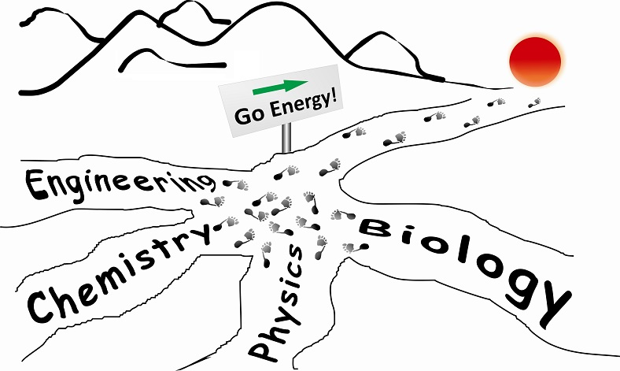

Welcome to Rui's Group
中文版 | Home | News | Research | Publications | Members | Facilities | Join Us | Contact
大家好, 我们计划招收博士后或科研助理，欢迎优秀的同学加盟。 对于已经或即将取得硕士学位的优秀同学，可申报北京大学“申请审核制” 博士招生名额，每年最多1名。欢迎联系！
Dr. Rui Zhu
Associate Professor
School of Physics, Institute of Modern Optics, Peking University, Beijing, 100871, China
Phone: (+86) 010-62750853 Email: iamzhurui@pku.edu.cn
研究方向
本课题组目前主要从事与太阳能利用相关的光电材料及器件研究

Selected Publications:
| 20. | Luo, D. Y.; Yang, W. Q.; Wang, Z. P.; Sadhanala, A.; Hu, Q.; Su, R.; Shivanna, R.; Trindade, G. F.; Watts, J. F.; Xu, Z. J.; Liu, T. H.; Chen, K.; Ye, F. J.; Wu, P.; Zhao, L. C.; Wu, J.; Tu, Y. G.; Zhang, Y. F.; Yang, X. Y.; Zhang, W.; Friend, R. H.; Gong, Q. H.; Snaith, H. J.; Zhu, R.; Science, 340*, 1442-1446, 2018. |
| 19. | Liu, T. H.; Zhou, Y. Y.; Li, Z.; Zhang, L.; Ju, M. G.; Luo, D. Y.; Yang, Y.; Yang, M. J.; Kim, D. H.;Yang, W. Q.; Padture, N. P.; Beard, M. C.; Zeng, X. C.; Zhu, K.; Gong, Q. H.; Zhu, R.; Advanced Energy Materials, 8*, 1800232, 2018. |
| 18. | Chen, K.; Wu, P.; Yang, W. Q.; Su, R.; Luo, D. Y.; Yang, X. Y.; Tu, Y. G.; Zhu, R.; Gong, Q. H.; Nano Energy, 49*, 411-418, 2018. |
| 17. | Wu, J.; Chen, J. Y.; Zhang, Y. F.; Xu, Z. J.; Zhao, L. C.; Liu, T. H.; Luo, D. Y.; Yang, W. Q.; Chen, K.; Hu, Q.; Ye, F. J.; Wu, P.; Zhu, R.; Gong, Q. H.; Nano Letters, 17*, 3563-3569, 2017. |
| 16. | Hu, Q.; Zhao, L. C.; Wu, J.; Gao, K.; Luo, D. Y.; Jiang, Y. F.; Zhang, Z. Y.; Zhu, C. H.; Schaible, E.; Hexemer, A.; Wang, C.; Zhang, W.; Liu, Y.; Graetzel, M.; Liu, F.; Russell, T.; Zhu, R.; Gong, Q. H.; Nature Communications, 8*, 15688, 2017. |
| 15. | Luo, D. Y.; Zhao, L. C.; Wu, J.; Hu, Q.; Zhang, Y. F.; Xu, Z. J.; Liu, Y.; Liu, T. H.; Chen, K.; Yang, W. Q.; Zhang, W.; Zhu, R.; Gong, Q. H.; Advanced Materials, 29*, 1604758, 2017. |
| 14. | Chen, K.; Hu, Q.; Liu, T. H.; Zhao, L. C.; Luo, D. Y.; Wu, J.; Zhang, Y. F.; Zhang, W.; Liu, F.; Russell, T.; Zhu, R.; Gong, Q. H.; Advanced Materials, 28*, 10718-10724, 2016. |
| 13. | Liu, T. H.; Chen, K.; Hu, Q.; Zhu, R.; Gong, Q. H.; Advanced Energy Materials, 6*, 1600457, 2016. |
| 12. | Wu, J.; Que, X. L.; Hu, Q.; Liu, T. H.; Luo, D. Y.; Liu, F.; Russell, T.; Zhu, R.; Gong, Q. H.; Advanced Functional Materials, 26, 4822-4828, 2016. (Selected as insider front cover) |
| 11. | Zhao, L. C.; Luo, D. Y.; Wu, J.; Hu, Q.; Zhang, W.; Chen, K.; Liu, T. H.; Liu, Y.; Zhang, Y. F.; Liu, F.; Russell, T.; Snaith, H.; Zhu, R.; Gong, Q. H.; Advanced Functional Materials, 26, 3508-3514, 2016. (Selected as insider back cover; Most accessed paper in April and May) |
| 10. | Liu, T. H.; Hu, Q.; Wu, J.; Chen, K.; Zhao, L. C.; Liu, F.; Wang, C.; Lu, H.; Jia, S.; Russell, T.; Zhu, R.; Gong, Q. H.; Advanced Energy Materials, 6*, 1501890, 2016. (Highlighted by MaterialsViewsChina.com) |
| 09. | Hu, Q.; Wu, J.; Jiang, C.; Liu, T. H.; Que, X. L.; Zhu, R.; Gong, Q. H.; ACS Nano, 8, 10161-10167, 2014. (Most Downloaded articles of ACS Nano in Oct. 2014) |
| 08. | Chang, Y.-M.; Zhu, R.; Richard, E.; Chen, C.-C.; Li, G.; Yang, Y.; Advanced Functional Materials, 22*, 3284-3289, 2012. (Most-accessed paper from Adv. Funct. Mater. in May 2012.) |
| 07. | Chen, C. C.; Dou, L. T.; Zhu, R.; Chung, C. H.; Song, T. B.; Zheng, Y. B.; Hawks, S.; Li, G.; Weiss, P. S.; Yang, Y.; ACS Nano, 6, 7185-7190, 2012. (Corresponding Author; Most downloaded articles of ACS Nano* in 2012 & 2013; Selected as 'Breakthrough Science' by ACS; Featured by Times Magazine, Los Angeles Times, ABC News, ......) |
| 06. | Li, G.; Zhu, R.; Yang, Y.; Nature Photonics, 6, 153-161, 2012. |
| 05. | Yang, J.; Zhu, R.; Hong, Z.; He, Y.; Kumar, A.; Li, Y.; Yang, Y.; Advanced Materials, 23 (30), 3465-3470, 2011. (Equal contribution as the first authors) |
| 04. | Zhu, R.; Kumar, A.; Yang, Y.; Advanced Materials, 23 (36), 4193-4198, 2011. (Featured by Science, Materials Today, MIT Technology Review, NPR, KTLA Channel 5*, etc.) |
| 03. | Zhu, R.; Chung, C. H.; Cha, K. C.; Yang, W. B.; Zheng, Y. B.; Zhou, H. P.; Song, T. B.; Chen, C. C.; Weiss, P. S.; Li, G.; Yang, Y.; ACS Nano, 5, 9877-9882, 2011. (Most downloaded articles of ACS Nano in Nov. 2011; Highlighted by C&EN*, etc.) |
| 02. | Zhang, W.; Zhu, R.; Ke, L.; Liu, X. Z.; Liu, B.; Ramakrishna, S.; Small, 6*, 2176-2182, 2010. (Co-first authors) |
| 01. | Zhu, R.; Jiang, C. Y.; Liu, B.; Ramakrishna, S.; Advanced Materials, 21, 994-1000, 2009. (The No.1 most accessed research paper in Advanced Materials in 2009.) |
Reviewer for
Science, Advanced Materials, Advanced Energy Materials, Advanced Functional Materials, JACS, Nature Communications, Nano Letters, Chemical Science, Small, Nanoscale, Journal of Materials Chemistry, Chemistry of Materials, etc...